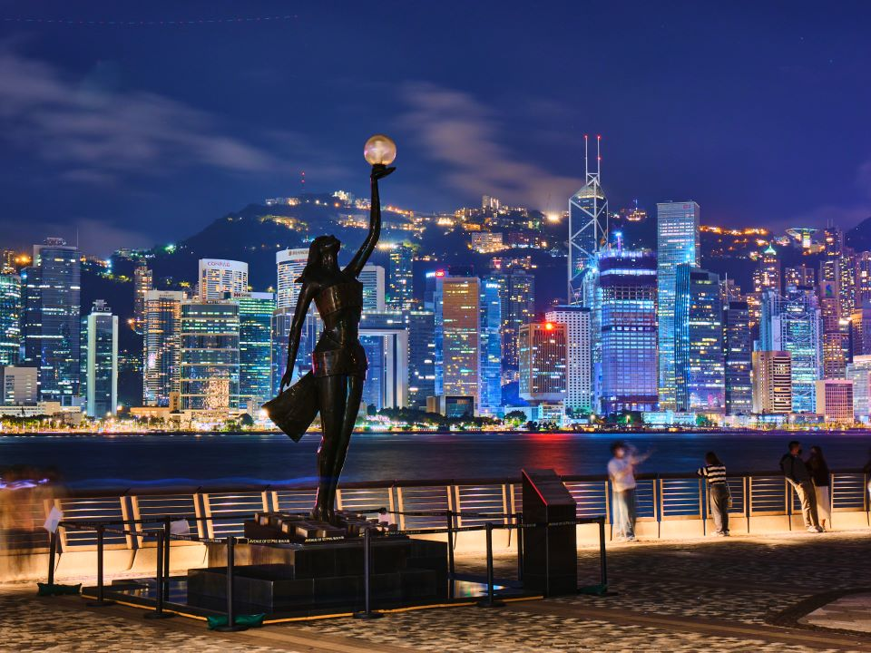

.png)

 Scenic, iconic, cinematic
Scenic, iconic, cinematic
The Avenue of Stars is a famous promenade located along the Victoria Harbour
waterfront in Tsim Sha Tsui, Kowloon. Inspired by the Hollywood Walk of Fame,
it was created to celebrate Hong Kong’s film industry, often known as the “Hollywood of the East.”
The walkway features over 100 plaques dedicated to actors, directors, and
film professionals who have made outstanding contributions to cinema. These
plaques include handprints and signatures of iconic figures such as Bruce Lee,
Jackie Chan, and Anita Mui, although plaques for deceased stars typically display
only their names.
Beyond honoring cinema legends, the promenade is also one of the best viewing
points for the Hong Kong Island skyline, offering breathtaking views across Victoria
Harbour. It is also the most popular place to watch the nightly multimedia show,
“A Symphony of Lights,” where buildings on both sides of the harbour light up in a
coordinated performance of lights, music, and lasers.
After undergoing major renovations, the Avenue of Stars reopened in 2019 with a modern
and environmentally friendly design. New features include handprints embedded into the
wooden handrails for easier viewing and augmented reality installations that allow visitors
to interact digitally with the statues and displays. Today, it remains one of Hong Kong’s most
visited attractions, combining cultural heritage, scenic beauty, and interactive technology.